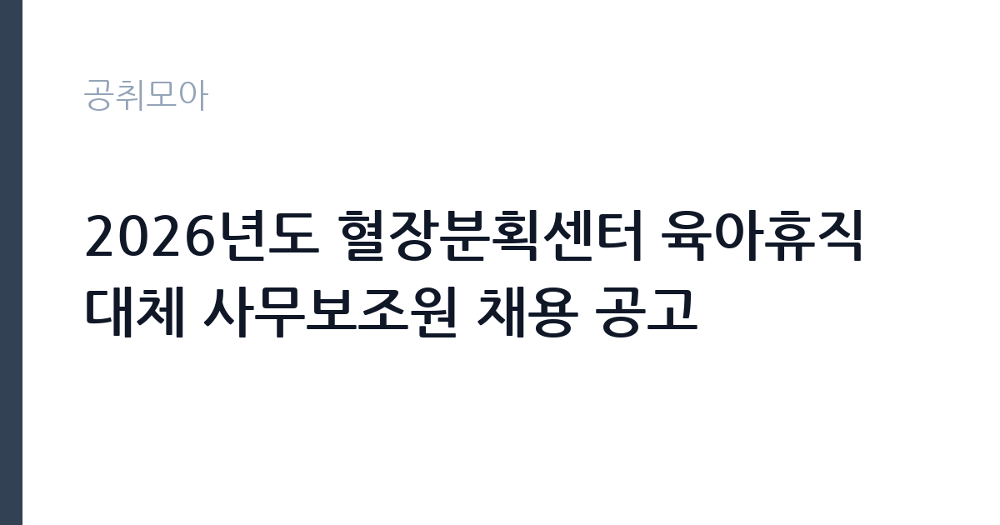

[공공기관] 2026년도 혈장분획센터 육아휴직대체 사무보조원 채용 공고
대한적십자사 · 충북 · 마감 2026-11-10 (D-16) · 출처 잡알리오

한눈에 보는 모집 조건
| 기관 | 대한적십자사 |
|---|---|
| 공고명 | 2026년도 혈장분획센터 육아휴직대체 사무보조원 채용 공고 |
| 고용형태 | 정규직 |
| 근무지 | 충북 |
| 게시일 | 2026-10-26 |
| 마감일 | 2026-11-10 (D-16) |
지원자격, 이렇게 읽으세요
- 공공기관 채용공시
- 세부 조건은 원문 공고문 확인
학력 요건은 만 18세 이상 고등학교 졸업 이상입니다. 여기에 사무분야 자격증 1개 이상이 필요합니다. 인정되는 자격은 워드프로세서, 컴퓨터활용능력 2급 이상, 한글속기 3급 이상, 비서 3급 이상입니다. 자격증이 하나도 없다면 지원 자체가 어려우므로 가장 먼저 확인해야 할 항목입니다. 임용예정일부터 근무가 가능해야 하고, 병역법 제76조의 병역의무 불이행자와 대한적십자사 직원운영규정 제20조 결격사유 해당자는 제외됩니다. 학력은 고졸부터 박사까지 폭넓게 열려 있어 전공이나 학교보다 자격증과 근무 가능 시점이 실질적인 기준입니다.
이 공고의 포인트
이 공고는 세 가지 지점에서 실무적으로 봐야 합니다. 첫째, 대체인력이라는 신분입니다. 육아휴직 대체 사무보조원은 원 근무자가 복직하면 계약이 종료되는 구조라 근무 기간이 명확한 대신 짧습니다. 계약 기간을 확인하고 그 기간에 무엇을 얻을지 판단해야 합니다. 둘째, 경쟁 구조입니다. 사무보조 직무는 자격 요건이 낮아 지원자가 몰리는 유형이지만, 혈장분획센터라는 특수한 근무지와 충북 근무 조건 때문에 지원자 범위가 좁아지는 측면이 있습니다. 셋째, 전형이 단순합니다. 1차 서류전형에서 7배수를 뽑고 2차 면접에서 최종합격자를 결정하는 2단계 구조여서 준비할 것이 적습니다.
전형은 어떻게 진행되나
1차 서류전형은 선발예정인원의 7배수를 선발하고, 2차 면접전형은 서류전형 합격자를 대상으로 1배수를 선발합니다. 접수는 온라인으로만 받고 방문 접수는 불가능하며, 각종 증빙서류를 반드시 첨부해야 합니다. 제출서류에서 사진과 생년월일, 성별, 학교명이 들어가는 부분은 삭제한 뒤 제출하도록 안내하고 있어 블라인드 채용 방식이 적용됩니다. 우대는 취업지원대상자와 북한이탈주민에게 전형 단계별로, 장애인에게는 서류심사 우선 합격과 면접 우대 방식으로 적용됩니다. 다만 취업지원대상자 가점은 응시자 수가 선발예정인원과 같거나 적은 경우에만 점수로 반영됩니다.
원문에서 확인한 전형 방식
○ 만18세 이상 고등학교 졸업(졸업 예정자 포함) 이상 학력 소지자 ○ 국가기술자격법시행규칙 제3조의 규정에 의거 사무분야 자격증 1개 이상 소지자 (워드프로세서, 컴퓨터활용능력 2급 이상, 한글속기 3급 이상, 비서 3급 이상) ○ 임용예정일로부터 근무 가능한 자 ○ 병역법 제76조의 병역의무 불이행자에 해당하지 않는 자 ○ 대한적십자사 직원운영규정 제20조(결격사유)에 해당하지 않는 자
이런 분께 추천해요
- 워드프로세서나 컴퓨터활용능력 2급 이상을 보유한 분
- 충북 지역에서 근무 가능하고 계약 기간 근무에 문제가 없는 분
- 행정·사무 보조 업무를 착실히 수행하려는 분
지원 전 체크리스트
- 사무분야 자격증(워드프로세서, 컴활 2급 이상, 한글속기 3급, 비서 3급)을 보유했는가
- 제출서류에서 사진·생년월일·성별·학교명을 삭제했는가
- 계약 기간과 근무 개시 시점을 확인했는가
- 11월 10일 오후 5시 마감 전에 온라인 접수를 완료했는가
모집 일정과 제출 타이밍
10월 26일 공고, 11월 10일 오후 5시 마감입니다. 접수 기간이 보름 남짓으로 짧지 않지만 서류전형 7배수, 면접 1배수 구조라 단계마다 대기 시간이 있습니다. 자격증 사본과 졸업증명서, 주민등록등본 등 기본 서류를 첫 주에 준비해 두십시오. 온라인 접수만 가능하므로 마감일에 시스템이 몰릴 수 있습니다. 마감 시각이 오후 5시라는 점도 감안해 당일 오전까지 제출을 마치는 편이 안전합니다. 면접 일정은 서류 발표 후 개별 통보됩니다.
직무 이해하기: 공공기관
혈장분획센터는 헌혈로 모은 혈액 가운데 혈장을 원료로 의약품을 제조하는 시설입니다. 사무보조원은 센터 운영에 필요한 행정 업무를 지원합니다. 문서 접수와 정리, 기록 관리, 물품 구매와 재고 확인, 회의 자료 준비, 방문객 안내 같은 일이 중심이 됩니다. 의약품 제조 시설인 만큼 작업 기록과 문서 관리에 정해진 절차가 있고, 위생과 안전 규정을 지켜야 합니다. 부서에 따라 생산 관련 서류의 입력과 확인, 교육 기록 관리 업무가 더해집니다. 육아휴직 대체인력이므로 인수인계 기간이 짧을 수 있어 업무 매뉴얼을 빠르게 익히는 것이 중요합니다.
자기소개서 작성 팁
사무보조 지원서는 화려한 성과보다 정확성과 성실성을 보여주는 것이 핵심입니다. 문서 작업에서 오류를 줄인 경험, 여러 부서의 요청을 동시에 처리한 경험, 재고나 비품을 정리해 체계를 만든 경험이 좋은 소재입니다. 혈장분획센터가 의약품 제조 시설이라는 점을 알고 있다는 사실을 드러내면 준비도가 보입니다. 기록과 절차를 중요하게 여긴다는 점을 한 문단으로 정리하십시오. 지원동기는 적십자사의 혈액사업이 어떤 의미를 갖는지와 연결하면 자연스럽습니다. 마지막은 계약 기간 동안 성실히 근무하고 인수인계를 철저히 하겠다는 다짐으로 마무리하십시오.
면접 준비 포인트
면접은 정확성과 근무 태도를 확인하는 질문이 중심입니다. 같은 문서를 여러 번 확인해야 하는 업무를 어떻게 처리하는지, 급한 요청과 정해진 절차가 충돌할 때 어떻게 판단하는지, 인수인계를 받을 시간이 짧을 때 어떻게 익힐지 같은 질문이 나옵니다. 대체인력이라는 신분을 이해하고 있는지도 확인됩니다. 계약 기간이 정해져 있다는 점을 알고 장기 근무를 전제로 한 답변을 하면 오히려 신뢰를 잃을 수 있으니, 주어진 기간에 역할을 다하겠다는 태도로 답하십시오. 충북까지 통근이 가능한지도 실질적인 평가 요소입니다.
급여·근무조건 읽는 법
대한적십자사 사무보조원의 보수는 사내 직원운영규정과 임금 체계에 따라 결정되며, 이번 공고는 본문에 연봉이나 월 급여를 제시하지 않았습니다. 구체적인 금액은 원문 공고문의 처우 항목에서 확인해야 하고, 확인되지 않은 수치는 추정해서 쓰지 않는 것이 원칙입니다. 육아휴직 대체인력은 계약 기간이 정해져 있으므로 월 급여보다 계약 기간 전체의 총액과 4대 보험·퇴직급여 적용 여부가 실질적인 판단 기준이 됩니다. 하한선은 2026년 적용 최저임금 시급 10,320원, 월 환산 2,156,880원(주 40시간·209시간 기준, 고용노동부 고시 제2025-47호)입니다. 세전 금액에서 약 9% 안팎이 공제된다고 보고 실수령액을 가늠하시고, 명절휴가비나 정액급식비 같은 수당 항목이 있는지도 함께 확인하십시오.
자주 묻는 질문
- 육아휴직 대체인력은 계약 기간이 얼마나 되나요?
원 근무자의 육아휴직 기간에 맞춰 정해지며 복직 시점에 근무가 종료됩니다. 정확한 기간은 원문 공고문의 채용 기간 항목에서 확인해야 합니다. - 자격증이 없으면 지원할 수 없나요?
워드프로세서, 컴퓨터활용능력 2급 이상, 한글속기 3급 이상, 비서 3급 이상 가운데 하나가 반드시 필요합니다. 사무분야 자격증이 없다면 응시 자격을 충족하지 못합니다. - 접수는 방문해서 할 수 있나요?
온라인 접수만 가능하고 방문 접수는 받지 않습니다. 대한적십자사 채용 홈페이지에서 접수하며 증빙서류를 반드시 첨부해야 합니다.
함께 보면 좋은 공고
[공공기관] 2026년도 10월 블라인드 공개채용 계약직 (보건직, 행정직, 원무직) 모집 공고 — 마감 2026-11-09[공공기관] 2026년도 10월 블라인드 공개채용 국비계약직(작업치료사) 모집 공고 — 마감 2026-11-09[공공기관] 한국토지주택공사 인천지역본부 기간제근로자(매입행정역, 매입기술역, 공사원가검토역) 채용공고 — 마감 2026-11-09출처: 잡알리오 공개정보를 바탕으로 공취모아가 정리한 안내글입니다. 모집 조건·일정은 변경될 수 있으니 지원 전 반드시 원문 공고문을 확인하세요. 본 글은 정보 제공용이며 합격을 보장하지 않습니다.